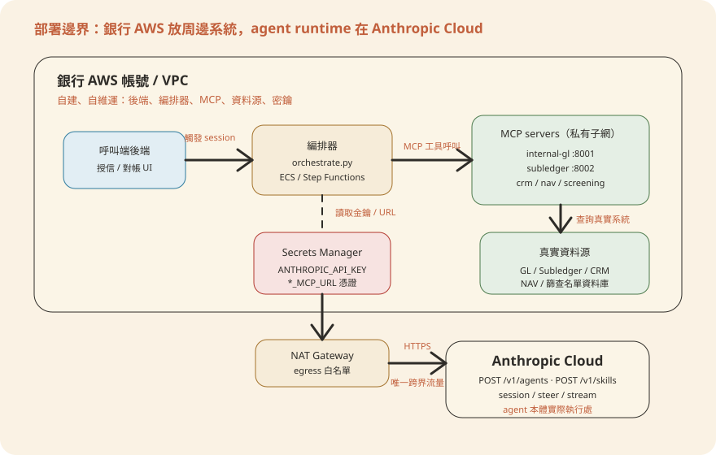
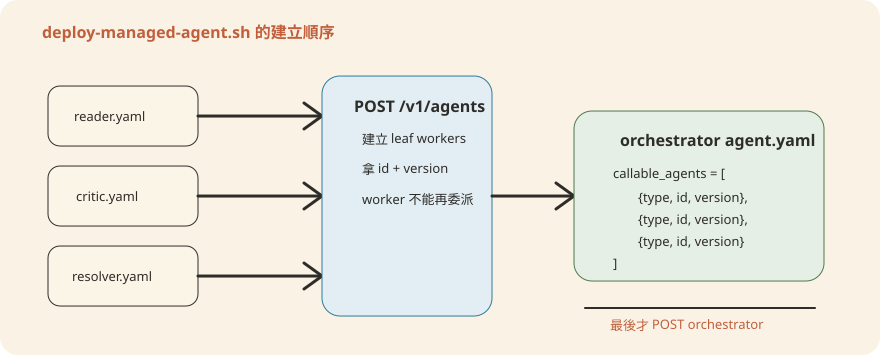

Chapter 7部署：CMA 與 AWS 架構
「把 agent 部署到 AWS」這句話在本書的脈絡下容易被誤讀。這一章要把邊界畫清楚：Claude Managed Agent（CMA）本體跑在 Anthropic 的雲端，銀行的 AWS 帳號裡放的是圍繞它的一圈周邊系統——呼叫端後端、MCP servers、編排器、資料源、密鑰管理。讀完本章，你應該能畫出這張邊界圖、看懂 deploy-managed-agent.sh 每一步在做什麼、並且知道銀行的平台團隊在 AWS 這一側要準備哪些元件與流程。
7.1 先破題：CMA 在哪裡跑，AWS 放什麼
Claude Managed Agent（CMA）是 Anthropic 的託管服務：你把 agent 的設定（system prompt、skills、工具、MCP server 清單、可委派的 subagents）用一個 JSON 物件描述好，POST 到 https://api.anthropic.com/v1/agents，這個請求需要帶 beta header anthropic-beta: managed-agents-2026-04-01（見 scripts/deploy-managed-agent.sh 第 35 行）。建立成功後，Anthropic 回傳一個 agent.id 與 version——之後所有的 session、steering event 都是打這個 agent_id，執行環境、對話狀態、模型呼叫全部在 Anthropic 的基礎設施裡完成。
所以「部署在 AWS」指的從來不是 agent 本身，而是圍繞它的周邊系統：
- 呼叫端後端——銀行內部觸發 agent session、接收結果的服務（例如授信審查系統呼叫
gl-reconciler）。 - MCP servers（MCP，Model Context Protocol，一套讓 agent 用標準方式存取外部工具／資料的協定）——agent 透過
mcp_servers設定連到的資料介面，例如internal-gl、subledger（見managed-agent-cookbooks/gl-reconciler/agent.yaml），實體上是銀行機房或 VPC 裡的服務。 - 編排器——
scripts/orchestrate.py這類監聽 session 事件、處理跨 agent handoff 的常駐程式。 - 資料源——GL、subledger、CRM、NAV 系統本身，agent 從不直接連它們，永遠透過 MCP server 這層代理。
- 密鑰管理——
ANTHROPIC_API_KEY、各 MCP 的連線憑證。
畫成一張圖，銀行 VPC（Virtual Private Cloud，銀行在 AWS 裡劃出的私有網路環境）與 Anthropic API 之間只有一條邊界：出站的 HTTPS 呼叫。

7.2 deploy-managed-agent.sh 逐段解析
scripts/deploy-managed-agent.sh 是把 managed-agent-cookbooks/<slug>/agent.yaml 轉成 POST /v1/agents 請求的唯一入口。用法很單純：
export ANTHROPIC_API_KEY=sk-ant-...
export GL_MCP_URL=https://gl-mcp.internal.bank.example/mcp
export SUBLEDGER_MCP_URL=https://subledger-mcp.internal.bank.example/mcp
scripts/deploy-managed-agent.sh gl-reconciler腳本內部做四件事，順序很重要：
1. YAML → JSON，並代換 ${..._MCP_URL} 環境變數
yaml2json()（scripts/deploy-managed-agent.sh 第 42–58 行）用 Python + PyYAML 把 manifest 讀進來，再用正則 \$\{([A-Z0-9_]+)\} 找出所有 ${FOO} 佔位符，從環境變數取值代換。這裡有一道容易被忽略但很重要的注入防護：
SAFE = re.compile(r"^[A-Za-z0-9._/:@-]*$")
def sub(m):
name = m.group(1)
v = os.environ.get(name)
if v is None:
return m.group(0)
if not SAFE.fullmatch(v):
sys.exit(f"refusing ${{{name}}}: value contains characters outside [A-Za-z0-9._/:@-]")
return v只要環境變數的值裡出現白名單以外的字元（例如引號、反斜線、換行），腳本會直接中止部署，而不是把值原封不動塞進 YAML 再解析——避免有人透過一個被污染的環境變數（例如 CI 系統裡被覆寫的 GL_MCP_URL）跳脫字串、改寫成別的 JSON 欄位。這對銀行工程師的意義是：Secrets Manager 裡存的 MCP URL、API Key 一旦格式跑掉（比如誤存成一段 JSON blob），部署會直接失敗而不是靜默注入錯誤設定，這是你在寫 CI pipeline 時可以依賴的安全邊界。
2. Skill 上傳與快取
upload_skill()（第 62–92 行）把 skills/ 目錄打包成 zip，POST 到 /v1/skills（注意這條路徑用的是另一組 beta header skills-2025-10-02，跟 /v1/agents 的 managed-agents-2026-04-01 不同，且是 multipart 而非 JSON）。同一次部署裡，同名 skill 只會上傳一次——SKILL_CACHE_FILE 是個暫存檔，用 key=value 的方式記錄「這個資料夾名字已經上傳過，skill_id 是什麼」，遞迴呼叫多個 subagent 共用同一份 skill 時不會重複上傳。
3. 遞迴：先建 subagents，再建 orchestrator
create_agent()（第 138–178 行）是遞迴函式。看第 152–160 行：
sub_ids="[]"
while IFS= read -r m; do
[[ -z "$m" ]] && continue
local out sid sver
out=$(create_agent "$base/$m")
sid=${out%% *}; sver=${out##* }
sub_ids=$(jq --arg i "$sid" --argjson v "$sver" '. + [{type:"agent", id:$i, version:$v}]' <<<"$sub_ids")
done < <(jq -r '.callable_agents[]?.manifest // empty' <<<"$json")對每一個 callable_agents[].manifest（例如 gl-reconciler 的 subagents/reader.yaml、critic.yaml、resolver.yaml），先遞迴呼叫 create_agent 把它建出來、拿到 agent_id 與 version，才能把 {type: agent, id, version} 塞進 orchestrator 的 callable_agents 欄位再建 orchestrator 本體。所以一次 gl-reconciler 部署背後其實是 4 次 POST /v1/agents：3 個 leaf worker + 1 個 orchestrator，順序固定是「worker 先、orchestrator 後」，因為 orchestrator 的請求體需要引用 worker 已經拿到的 id。（補充一個 bash 語法：上面第 4 行的 ${out%% *} 與 ${out##* } 是參數展開，分別取「第一個空格之前」與「最後一個空格之後」的片段——把 create_agent 回傳的 "id 版本" 字串拆成兩個變數。）

callable_agents 需要先拿到 leaf worker 的 id/version。這正好對應第 8 章會展開的規則：callable_agents 目前只支援一層委派，worker 不能再委派 worker——腳本的遞迴實作上完全可以支援多層，但 API 本身不允許 worker 的 manifest 裡再帶 callable_agents。
4. --dry-run：不打 API，先看 payload
加第二個參數 --dry-run（第 180–187 行）時，腳本會走完整個 YAML 解析、skill 快取、遞迴建構流程，但不呼叫真正的 POST，而是把每一個「本來要送出的」JSON body 收集到暫存檔，最後印成一個陣列。這一步不需要 ANTHROPIC_API_KEY（第 22 行 [[ $DRY_RUN -eq 1 ]] || : "${ANTHROPIC_API_KEY:?...}"），非常適合放進 CI（Continuous Integration，持續整合流程，程式一合併就自動跑檢查）當作「這個 manifest 能不能正確解析」的檢查，不必消耗真正的 API 額度，也不必在 CI 裡放正式金鑰。
agent id、cookbook 標籤、console 連結（第 189–194 行）。這個 agent_id 是後續所有 session 呼叫、orchestrate.py 裡 agent_ids 對照表（第 64 行 agent_ids: dict[str, str]，slug 對應到已部署的 agent_id）的唯一鑰匙——沒存下來，下次只能用 console 手動查，或者重新部署產生新的 agent（版本號會往上跳，但 id 不變是同一個 agent 的新版本，重新整個建立則是全新的 id）。7.3 AWS 參考架構：周邊系統怎麼擺
延續 7.1 的邊界圖，把銀行 VPC 內每一格拆開看選型與理由。
MCP servers：ECS Fargate 或 Lambda，放私有子網
MCP server 是 agent 唯一能碰到銀行資料的窗口（mock-mcp/mock.env 裡列出的 GL_MCP_URL、SUBLEDGER_MCP_URL、PORTFOLIO_MCP_URL、NAV_MCP_URL、CRM_MCP_URL、SCREENING_MCP_URL、CAPIQ_MCP_URL 等，本機測試時全部指向 127.0.0.1:800x）。上線時只改這些 URL 指向真實系統，不改 agent.yaml 裡的 server 名稱（internal-gl、subledger 這些名字是 agent 設定裡固定引用的 key）。實作上：
- 常駐、有狀態連線（例如維持一個資料庫連線池）的 MCP server 用 ECS Fargate（AWS 代管的容器執行環境，不用自己顧伺服器），掛 Application Load Balancer（對內做負載平衡的服務）或用 API Gateway（私有整合，只給 VPC 內部呼叫，不經過公網）暴露。
- 無狀態、呼叫頻率低的（例如包一層唯讀查詢的 screening MCP）可以用 Lambda（免管理伺服器、按呼叫次數計費的無伺服器運算服務）+ API Gateway，省掉常駐運算成本。
- 兩種都放在私有子網，不給公網 IP——MCP server 只需要被銀行 VPC 內的 agent 呼叫端／編排器打得到，不需要對公網開放。
出站到 api.anthropic.com：NAT Gateway + egress 白名單
私有子網裡的服務（編排器、批次觸發 agent session 的後端）要能連到 Anthropic API，走 NAT Gateway（讓私有子網裡的服務能對外連線、但外部無法主動連進來的閘道）出去；在 NAT 前面或用 egress 防火牆（AWS Network Firewall / 出站 proxy）限制只能連 api.anthropic.com（以及 skills 上傳用到的同網域），其餘出站一律擋掉。這是銀行網路安全評審最常問的一題：agent 呼叫端能不能被限制成「只能講到 Anthropic，講不到任何其他外部網域」。
密鑰：Secrets Manager
ANTHROPIC_API_KEY 與各 ${..._MCP_URL} 對應的憑證（如果 MCP server 本身需要 mTLS（雙向 TLS，伺服器與呼叫端互相驗證憑證）憑證或內部 API key）都放 AWS Secrets Manager（AWS 代管的密鑰儲存與自動輪替服務），部署流程（見 7.4）在執行 deploy-managed-agent.sh 前用 aws secretsmanager get-secret-value 撈出來、export 成環境變數，絕不寫死在 agent.yaml 或 CI 設定檔裡——這也呼應 7.2 提到的字元白名單防護：Secrets Manager 存的值本身就該是乾淨的 URL / token 格式，不會踩到那道防線。
編排器 orchestrate.py 的落點
scripts/orchestrate.py 的檔頭寫得很清楚：這是「參考實作」，正式環境要換成銀行自己的工作流引擎（Temporal、Airflow、Guidewire event bus，見第 4 行註解）。它做的事是訂閱某個 agent session 的 SSE（Server-Sent Events，伺服器單向持續推送訊息的串流協定）串流（client.beta.agents.sessions.stream(...)），從輸出文字裡抓 handoff_request JSON blob，驗證 target_agent 在允許清單 ALLOWED_TARGETS 內、payload 通過 HANDOFF_PAYLOAD_SCHEMA（用 jsonschema.validate），才呼叫 sessions.steer() 把事件轉給目標 agent。落地方式看觸發模式：
- 需要長時間掛著監聽串流（session 持續開著）→ ECS 常駐服務，一個 task 對應一組正在跑的 session。
- 事件驅動、批次觸發（例如每天月結跑一次）→ Step Functions（用狀態機描述多步驟流程的工作流服務）+ EventBridge（事件路由／排程服務），用排程或上游事件觸發一次性的 Lambda/ECS task 執行完就結束。
不論哪種，orchestrate.py 檔頭的威脅模型都要照抄：handoff_request 是從「已經處理過不受信任文件」的 agent 輸出裡解析出來的，攻擊者若能在文件裡塞一段偽造的 handoff_request JSON，理論上能誘導路由——腳本用「目標 agent 寫死允許清單」+「payload schema 驗證」兩道防線擋，正式環境如果能改成專用的 tool call 或型別化的 SSE 事件（模型單靠引用文件文字做不出來的形式）會更穩，這點檔頭註解（第 13–14 行）也直說了。
環境分離：dev / staging / prod
CMA 沒有「環境」概念——每一次 POST /v1/agents 就是建一個獨立的 agent 資源。環境分離要靠銀行自己維護：
| 環境 | agent_id 存放位置 | MCP URL 指向 |
|---|---|---|
| dev | 開發者本機 .env 或個人 Secrets Manager 路徑 | mock-mcp 本機 mock server（127.0.0.1:800x） |
| staging | /bank/staging/agents/<slug>_id（Secrets Manager 或 SSM Parameter Store） | UAT 環境的 GL/subledger/CRM 系統 |
| prod | /bank/prod/agents/<slug>_id | 正式 GL/subledger/CRM 系統 |
三個環境各自跑一次 deploy-managed-agent.sh，拿到三個不同的 agent_id，靠 CI/CD 管線（下一節）把對應的 id 寫進對應環境的設定裡，呼叫端後端依環境查對應的 id。
7.4 CI/CD：從 git push 到上線
這個 repo 目前的 CI 慣例是 .github/workflows/ 下的三支 workflow：plugin-validate.yml（跑官方 plugin linter）、secret-scan.yml、version-bump.yml（PR 檢查 plugin 版本是否已 bump，對照 scripts/version_bump.py --check）。部署 managed agent 目前沒有現成的 workflow，但可以照同樣的風格（GitHub Actions、ubuntu-latest、actions/checkout@v4）加一支，串起 scripts/check.py → dry-run → 正式部署：
on:
push:
branches: [main]
paths: ['managed-agent-cookbooks/**']
jobs:
deploy:
runs-on: ubuntu-latest
steps:
- uses: actions/checkout@v4
- run: python3 scripts/check.py # manifest/skill 一致性
- run: scripts/deploy-managed-agent.sh gl-reconciler --dry-run
- name: deploy
env:
ANTHROPIC_API_KEY: ${{ secrets.ANTHROPIC_API_KEY_PROD }}
GL_MCP_URL: ${{ secrets.PROD_GL_MCP_URL }}
run: |
scripts/deploy-managed-agent.sh gl-reconciler | tee deploy.log
# 把 "agent id: xxx" 這行存進 SSM，供呼叫端後端讀取python3 scripts/check.py 是這條管線的第一道閘門：它會 lint 每個 manifest、確認 system.file／skills.path／callable_agents.manifest 引用的檔案都存在，並且檢查 plugins/agent-plugins/<slug>/skills/ 底下的副本是否跟 plugins/vertical-plugins/ 的真本一致（漂移就會失敗）——這一步失敗代表連 dry-run 都不用跑了。第二道閘門是 --dry-run，確認 YAML 能正確解析成合法的 POST /v1/agents body。只有前兩關都過，才用正式金鑰打真正的 deploy-managed-agent.sh gl-reconciler，並把輸出的 agent id 這行存下來。
manifest 或 skill 變更合併到 main
manifest 引用 + skill 副本一致性檢查
解析 YAML，印出將送出的 POST body，不打 API
正式金鑰，先建 subagents 再建 orchestrator
寫入 SSM/Secrets Manager，供呼叫端查詢
呼叫端後端改讀新 agent_id，舊版本保留供回退
POST /v1/agents 每次都可能回傳同一個 id 但遞增的 version（視 API 行為而定），也可能是全新 id——實作 CI 時要決定「更新既有 agent 設定」還是「每次都建新 agent、呼叫端切換 id」，兩種策略都合理，但要在 runbook 裡寫死一種，別讓兩種混用。7.5 銀行落地注意事項
每一次 agent 呼叫，system prompt、skill 內容、對話歷史、以及 MCP server 回傳給 agent 的資料都會送到 Anthropic API 處理——這是合規團隊做資料出境（cross-border data transfer）評估時要盤點的範圍。實務上要先回答三個問題：
- MCP server 回給 agent 的欄位有沒有做過濾／遮罩？（例如
gl-reconciler的reader只回傳 schema 驗證過的、長度受限的 JSON，見managed-agent-cookbooks/gl-reconciler/README.md的安全分層說明） - 哪些欄位屬於個資或客戶敏感資訊（KYC 文件、客戶持倉），是否有替代識別碼可用？
- Anthropic 對 API 輸入資料的保留與訓練使用政策是否符合銀行的資料治理政策？（這屬於供應商合約與服務條款層次，需與法務/合規確認，不是架構層面能單方面解決的問題。）
MCP server 放在私有子網後，唯一能碰到它的路徑應該只有：編排器、agent 呼叫端後端、以及維運用的 bastion。不要因為要「讓 Anthropic API 連得到 MCP server」就把 MCP server 開公網——方向永遠是反過來的：agent 在 Anthropic 雲端執行時，是 Anthropic 的基礎設施代表 agent 呼叫銀行暴露出來的 MCP endpoint（如果用 type: url 的 remote MCP），所以 MCP server 的入站規則要放行的來源是 Anthropic 的出站 IP range（需查閱 Anthropic 對 MCP 連線的最新文件），而不是任意公網來源；能用 VPN/PrivateLink（不經公網、在 AWS 內部直接建私有連線的服務）之類的私有連線方案時優先用私有連線。
ANTHROPIC_API_KEY 與各 MCP 憑證都放 Secrets Manager，啟用自動輪替（rotation-lambda）。輪替後要留意兩件事：正在跑的 orchestrate.py 常駐程序如果把 key 快取在記憶體裡，需要有機制重新讀取（重啟或熱重載）；CI 部署管線每次執行都是重新 export，天然吃到最新版本，不需要額外處理。
7.6 本章重點與檢核清單
- CMA 本體（system prompt、skills、模型推論、session 狀態）跑在 Anthropic 雲端，
POST /v1/agents是唯一的建立入口。 - 「部署在 AWS」= 呼叫端後端 + MCP servers + 編排器 + 資料源 + 密鑰管理，全部在銀行自己的 VPC 裡。
deploy-managed-agent.sh的核心邏輯：環境變數白名單代換防注入、skill 上傳快取、subagents 先建再建 orchestrator、--dry-run免金鑰驗證 payload。- MCP URL 從 mock（
127.0.0.1:800x）換成真實系統時，只改 URL，不改 agent.yaml 裡的 server 名稱。 - 部署輸出的
agent id是後續呼叫、handoff 路由的唯一鑰匙，一定要存進 Secrets Manager/SSM。
- 已確認
ANTHROPIC_API_KEY與各${..._MCP_URL}憑證存在 Secrets Manager，未寫死在任何 YAML 或 CI 設定檔 - MCP servers 部署在私有子網，未開放公網入站
- NAT Gateway 前的 egress 規則已限制只能連
api.anthropic.com（及 skills 上傳用網域） - CI 管線已串接
scripts/check.py→--dry-run→ 正式部署，且 dry-run 階段不使用正式金鑰 - dev/staging/prod 三個環境的
agent_id分開記錄，呼叫端依環境查詢對應 id orchestrate.py（或銀行自建的等價編排器）已落地為 ECS 常駐服務或 Step Functions/EventBridge 觸發，且ALLOWED_TARGETS允許清單已對照實際部署的 agent slug 清單- 已與合規/法務確認送往 Anthropic API 的資料範圍，完成資料出境評估
- 密鑰輪替流程已測試，確認常駐編排器能取得輪替後的新憑證
POST /v1/agents 建立的 agent 由 Anthropic 託管執行，銀行只需要自己維運 MCP servers（資料介面）、編排器（orchestrate.py 或等價工作流引擎）、呼叫端後端與 Secrets Manager 這些周邊系統；MCP URL 是透過 ${..._MCP_URL} 環境變數佔位，換到正式環境時只改環境變數值，不需要改 agent.yaml 裡的 server 名稱或重新設計。